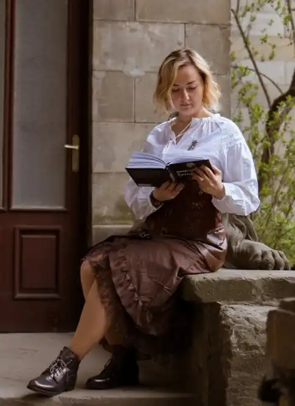

Ірина Грабовська народилась 28 травня 1987 року у Сніжному Донецької області. У 2009 закінчила філологічний факультет Донецького національного університету імені Василя Стуса за спеціальністю "Прикладна лінгвістика". Працювала редакторкою сайту бізнес-журналу "Компаньйон", з 2015 року — працює в IT тестувальницею програмного забезпечення. Мешкає в Києві.
У 2017 році приєдналася до проєкту підготовки книги про оборону Луганського аеропорту під псевдонімом Анастасія Воронова. Спільно з командою співавторів — Сергієм Глотовим, Анастасією Глотовою, Дмитром Путятою і Юрієм Руденком — взяла участь в написанні документальної хроніки "У вогняному кільці. Оборона Луганського аеропорту". У 2018 році книга вийшла друком у видавництві Фоліо і за перші пів року, за словами гендиректора видавництва Олександра Красовицького, було продано понад 15 000 екземплярів.
2019 року, вже під справжнім іменем, у видавництві КМ-Букс вийшов перший фантастичний роман авторки — "Остання обитель бунтарства". Це перша частина стимпанк-дилогії "Леобург". Книга увійшла до довгого списку премії "Книга року BBC — 2020" у номінації "Дитяча Книга року BBC". У 2020 році вийшло продовження дилогії — "Остання війна імперій". Жанр другого роману авторка визначає як стимпанк з елементами альтернативної історії. Обидві книги були перевидані у 2021 році одним томом під назвою "Леобург". Також у 2021 авторка написала підліткову повість "Місто біля моря", яка в 2022 році здобула І премію конкурсу "Молода КороНація" у категорії "Дорослі для дітей 12-15 років", але не була опублікована. У 2022 році у видавництві "Віват" вийшла перша частина трилогії "Замок із кришталю" у жанрі фентезі меча і чарів — "Зірки й кістки". У 2023 році було опублікована друга книга циклу — "Земля Крилатих". Сюжет трилогії ґрунтується на реальних подіях європейського середньовіччя, зокрема, війни спадкування Бретані та Столітньої війни на теренах Англії та Франції в XIV столітті. Оповідання Ірини Грабовської виходили у кількох збірках фантастичних оповідань. В 2021 році у видавництві "Навчальна книга — Богдан" вийшло оповідання "2003. Справа про острів Тузлу" у збірці "Агенція "Незалежність"". В 2022 році оповідання "Найближчі до пекла" увійшло до збірки видавництва "Жорж" "Хроніки незвіданих земель".